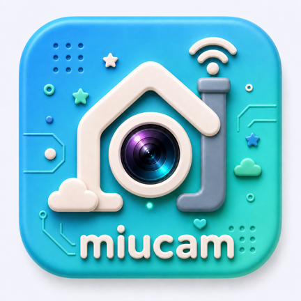
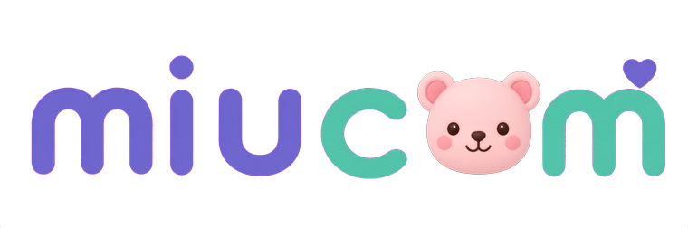

Mevcut ürün dosyalarıyla ölçek ve maske incelemesi. Bu sayfa yeni ikon önerisinin görseli değildir.
Ev, lens, Wi‑Fi, bulut, yıldız, kalp, devre izleri ve yazı aynı alanda.Bir ana fikir yerine çok sayıda ayrıntı.
İsim zaten ikonun altında var.İkon içindeki küçük yazıikinci kez yer kaplıyor.
Güçlü lens kalıyor; bebek bakımına ait sıcak kimlik geri planda kalıyor.

Alttaki yazı ve çevre ayrıntıları güvenli alanın dışında.
108 birimlik foreground, 72 birimlik görünür alanda gösterildi. Geometrik önizlemedir; gerçek launcher ekran görüntüsü değildir. Üretici maskeleri değişebilir.

İçeride ayıcık, yumuşak biçimler ve mor–mint renkleri var.Dışarıdaki ikon başka bir ürün izlenimi veriyor.
Mevcut ayıcığı temel alan tek, sade bir marka işareti. Yazısız ikon, tek zemin, güçlü silüet. Kamera çağrışımı gerekiyorsa bir küçük lens ayrıntısı; Wi‑Fi, bulut, yıldız ve devre süsleri kaldırılmalı.